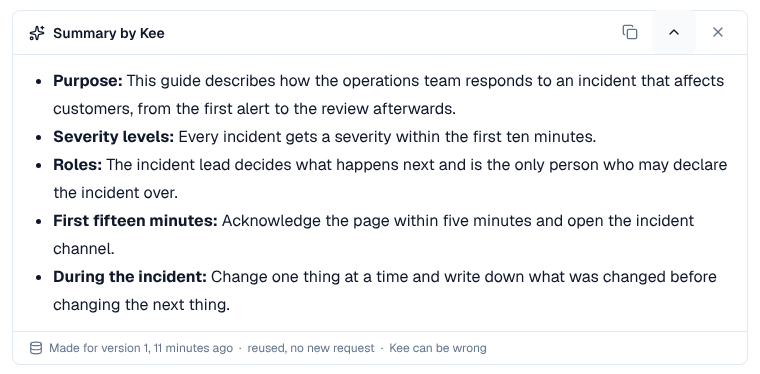

Kee can sum up a long published page in a few points, at the top of the page. A summary is made once for each version of a page and language, then shared by every reader of that version.
1. Get a summary
On a long published page (at least four blocks and about 150 words), select Summarise with Kee above the text. The summary appears in place as it is written.

- The footer says which version the summary was made for and whether it was reused, no new request or made now, kept for other readers.
- The buttons in its header copy the summary, collapse it, or hide it. Hiding and opening it again asks nothing new.
- A summary made from an earlier version isn't shown for a newer one: the next reader gets a new summary of the new version.
- Summaries are written in your language (the language of your Wiki interface).
Summaries always use the default model. Only a complete summary from the default model is kept for other readers; one written by the fallback model, or cut short, is shown to you only.
2. Very long pages
A page too long for the model is read in parts, and the parts are summed up together. The summary then says This page is very long: Kee read it in parts, so detail may be lost. On the longest pages Kee reads only the first sections and says how many of them the summary covers.
3. What summaries are not
- Not part of the page: they aren't in exports, search, versions or the page history, and nobody edits them.
- Not made in the background: only when a reader asks, and only for published pages (not drafts).
- Not available for whiteboards, or in a space where Kee is off.
A summary someone else already made doesn't count against your daily limit. Making a new one counts as one request (a very long page read in parts is still one request).